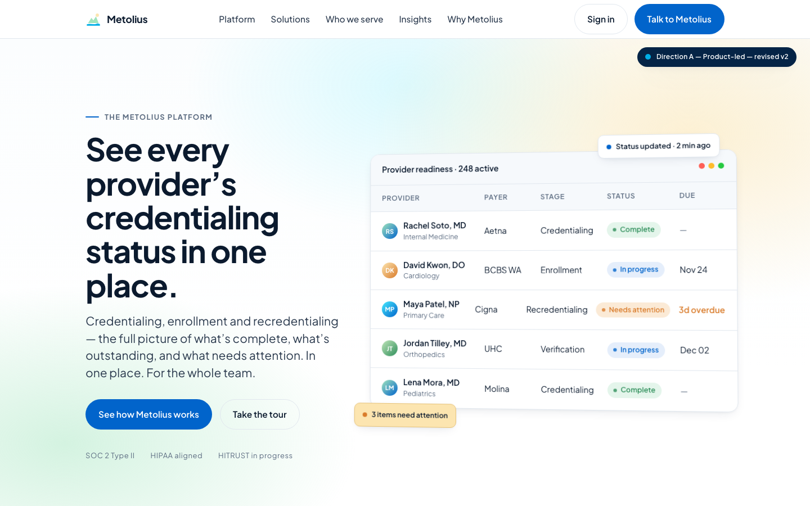
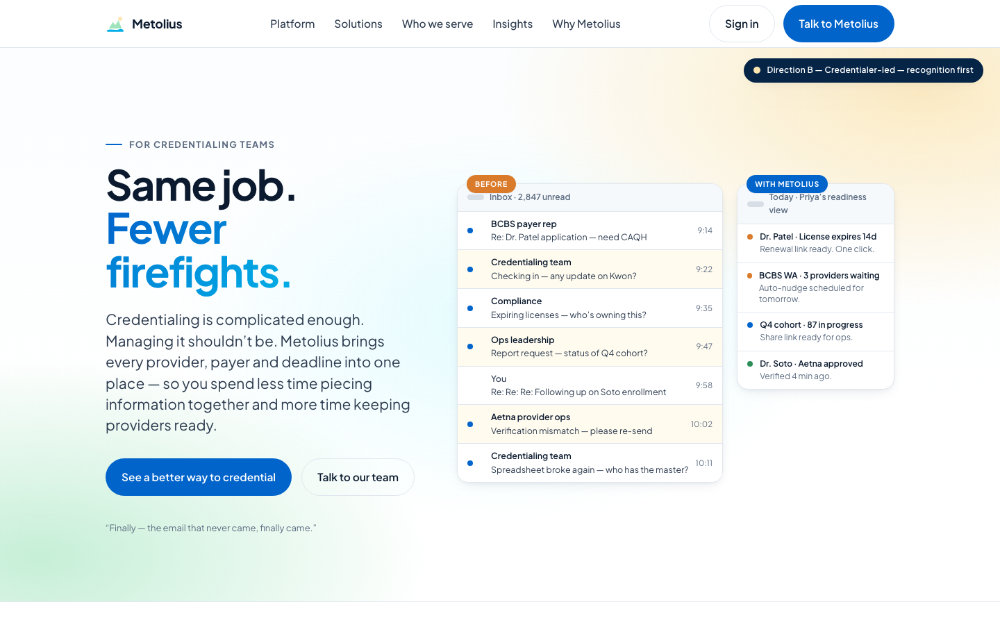
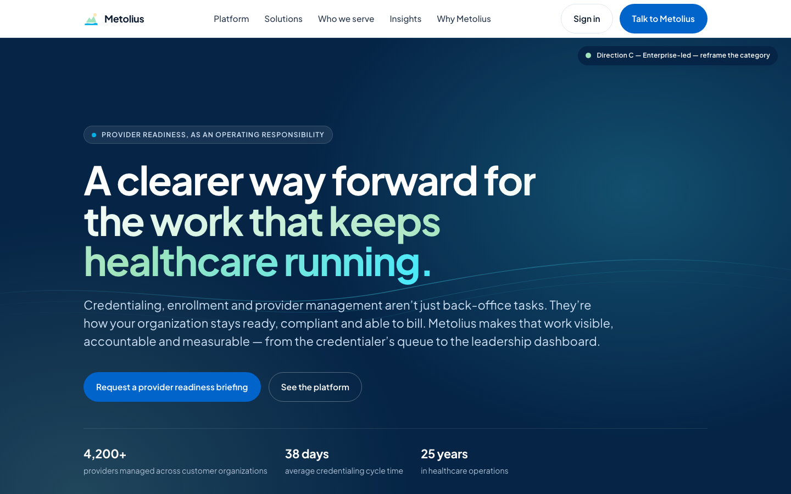

Same structural fix across all three — product and category get named in the first screen, no two-scroll wait for the "what is this" moment. What changes between the three is the voice leading the top of the page, mapped to three of the four audience voices in your brief.
Your critique — "we detail what we do too late, too many fluffy marketing titles before getting to the business" — maps cleanly onto the brief's own discipline: clarity takes priority over cleverness. So all three wireframes get to what Metolius actually does inside the first screen. No "Provider readiness, simplified" working alone up top with the explanation two scrolls down.
The 9-section architecture your brief proposes (recognize → route → see the work → people → confidence → next step) is the same in each. Copy voice, hero composition, and section emphasis are what differ.
Each direction leads with one of the four voices the brand brief defines — Product, Credentialer, or Enterprise/Brand — and shifts the hero composition to serve that voice. The fourth voice (Advisory) lives in the Insights section and sits inside each direction rather than leading one.
Full homepage stacks below, hero → final CTA. Not just three hero crops. Each one is a complete tonal take so you can read them as alternatives, not variations on one.

Hero puts the product UI front and centre — a live provider readiness table, named providers, real statuses, real payers. The 5-second answer is a picture, not a sentence. v2 brings in the Direction B gradient feel, a reachboost-style feature pop-out field, a shared-trust “verified once, reused everywhere” moment, a buyer-journey strip, a Metolius River brand band, and a Medallion-vs-Metolius differentiation panel.

Hero stages the before/after: the chaotic inbox the credentialer actually lives in, next to the Metolius readiness view. Warmth, empathy, the "sharks’ teeth, Diana’s smile" register. Sets up the Email That Never Came campaign activation. v2 amplifies the gradient, adds a credentialer-POV feature pop-out field with first-person captions, a “Confessions of a Credentialer” editorial teaser, and a Metolius River brand band.

Hero moves the conversation off "credentialing software" and onto "provider readiness as an operating responsibility." Dark, brand-forward, proof-heavy. The Modio counter — ground where they don’t currently lead.
These are low-fidelity wireframes — enough to react to tone and architecture, not to approve for build. Once a direction is locked, the next pass closes copy and adds mobile + the remaining nav pages (Platform, Credentialing, Managed services).